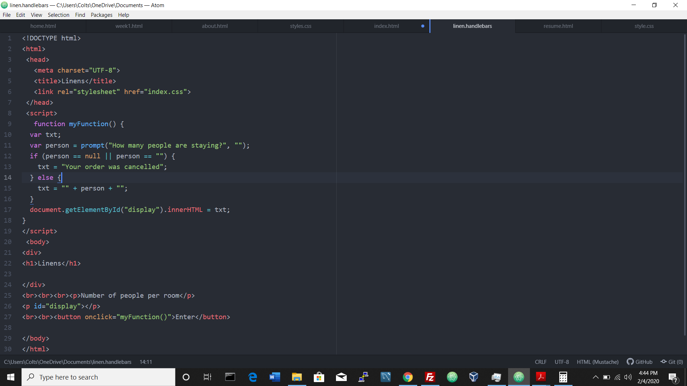
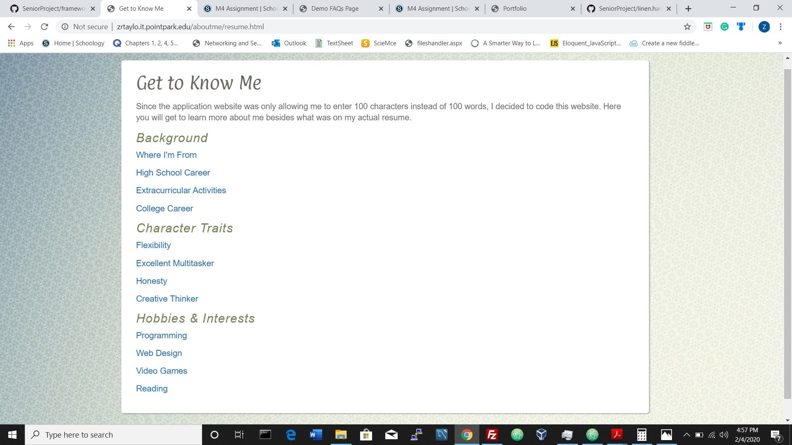

Here you will find some infromation regarding what I have learned so far through the IT program at PPU. I fortunately do not have many projects to showcase, so I will explain what I have learned so far and how I am applying it in the real world.
Handlebars are used to make a page dynamic, which means that administrators can alter the page and the modified content is updated in the database.

For my Senior Project, we are working alongside the Mobile Applications class. Our class is responsible for designing the administrative website where they an alter the FAQ page, view linen requests, and push notifications. We are also intigrating the database and the APIs for the other class to implement into the phone app they are designing.
I am going back to Ohio over the summer to work for Cedar Point. I was applying for a job and the website was only allowing 100 characters for a text field instead of 100 words so I decided to just make a website to showcase thinking outside the box and problem solving skills.
I participated in Mock Trial throughout my 4 years of high school as an attorney and witness. Here is a picture of our 2nd place trophy in an international tournament we particapted at in Atlanta (held by my friend, Dane).